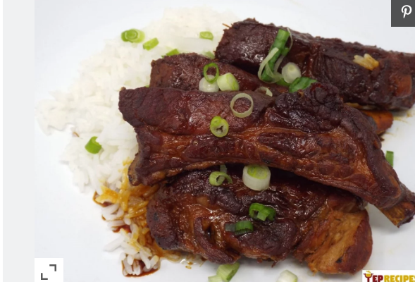

Japanese Style Pork Ribs

Description
A simple, Japanese-style, braised baby back ribs recipe that's simply delicious.
Ingredients
- 3 pounds baby back pork ribs
- ⅔ cup soy sauce
- ⅓ cup sake
- 3 tablespoons honey
- 2 tablespoons olive oil
- 4 cups water
- 2 cups uncooked white rice
- 3 medium (4-1/8" long)s green onions, thinly sliced
Instructions
- Remove the silvery skin from the back of the ribs by sliding the pointed end of a meat thermometer under the skin and pulling up. Pat the ribs dry with paper towels and cut into individual ribs.
- Mix soy sauce, sake, and honey together in a small bowl and set aside.
- Preheat the oven to 325 degrees F (165 degrees C).
- Heat oil in a large Dutch oven over medium-high heat until hot. Sear the ribs in batches until browned and they have a nice crust, about 3 minutes per side. Remove ribs to a plate and set aside.
- Drain Dutch oven of any excess oil. Carefully pour soy sauce mixture into the pot and scrape the bottom of the pan with a wooden spoon or spatula to release any stuck-on bits. Add ribs to the pot with the liquid and increase heat to medium-high. Bring to a boil. Cover tightly and remove from heat.
- Bake in the preheated oven until ribs are tender and no longer pink, about 2 1/2 hours, flipping over halfway through cooking time.
- Meanwhile, bring water and rice to a boil in a saucepan. Reduce heat to medium-low, cover, and simmer until rice is tender and water has been absorbed, 20 to 25 minutes.
- Serve ribs and sauce with white rice and sprinkle with green onions.